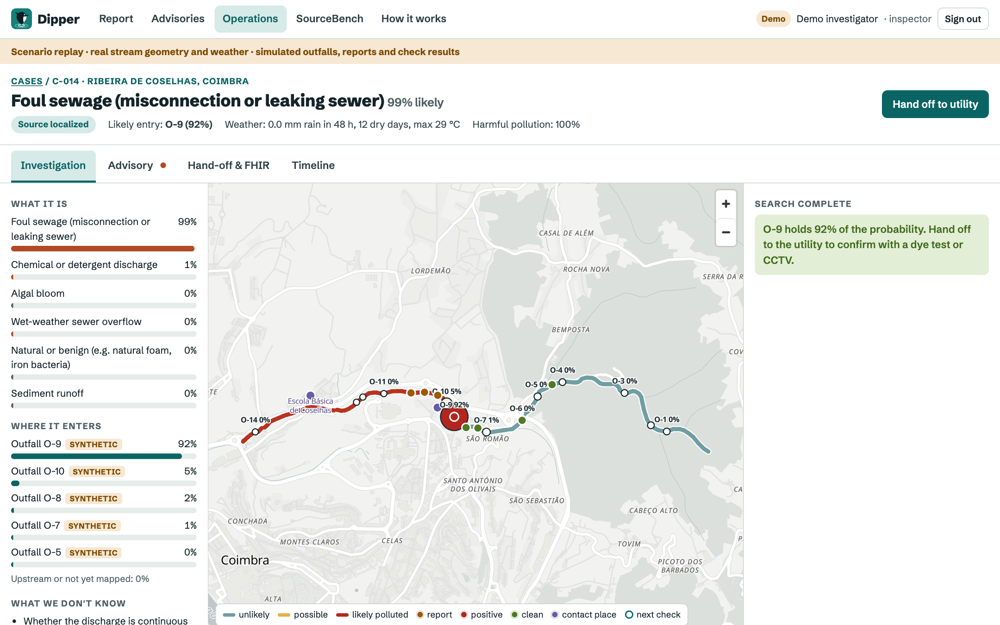

Find urban stream pollution at its source.
Urban streams are polluted by sewage that should never reach them: household plumbing misconnected to the surface water drain, leaking sewers, and overflows after rain. In the UK alone, an estimated 150,000 to 500,000 homes have a misconnected drain (CIWEM).
Knowing a stream is dirty is easy. Finding which pipe is responsible is hard: a stream has dozens of outfalls, discharges come and go, and crews walk the bank one pipe at a time. The people who notice first report into a void and never hear back. The recast EU Urban Wastewater Treatment Directive (2024/3019) now requires integrated plans covering storm overflows and urban runoff for every agglomeration of 100,000 p.e. and above by 2033.
| Who | What they get |
|---|---|
| Citizen phone, no account, offline, four languages | Reports what they see or smell in under a minute. Gets one short, nearby check that sharpens the search, and sees what their check changed. |
| Investigator utility or municipality | A probability for each explanation and each candidate outfall, shaded along the real stream, and the next best checks with both outcomes spelled out. |
| Public health officer | A drafted advisory that keeps observed apart from inferred, the possible risk and what needs a lab. Nothing is published until a person approves it. |
| Health information systems | An HL7 FHIR R4 bundle on the OneAquaHealth IG, with 0 errors in the official HL7 validator, pushed to any FHIR server. |
End to end: report → case → next best check → source localized → FHIR handover → advisory → fix verified. The utility always confirms the pipe (dye test, smoke test or CCTV) before repair.

Investigator workspace on the live deployment: the source localized at outfall O-9. Scenario replay with real stream geometry and weather; outfalls, reports and check results are simulated and labelled as such.
| Strategy | Correct | Median checks | Cost |
|---|---|---|---|
| Walk the bank | 28% | 20 | 1.49 |
| Bisect the stream | 43% | 13 | 0.95 |
| Dipper | 56% | 9.5 | 1.30 |
| Pure information gain | 74% | 8 | 4.92 |
7 stream networks (5 real OneAquaHealth streams, 2 synthetic), 40 trials each, 25-check budget, a simulated world noisier than the model. Dipper doubles the success of a bank walk at lower cost; pure information gain spends about 3.8 times more.
One container, deployed on Render. Engine: Python, NumPy, NetworkX. API: FastAPI with roles, hashed tokens, rate limits, a strict CSP and an append only SQLite event store that rebuilds cases by replay. Web: React and MapLibre PWA. CI: 84 tests, accessibility audit, FHIR validation, image build and smoke test.
| Built and tested | Next, with a pilot partner |
|---|---|
| Engine, recommender, SourceBench and scenario replay | Real outfall inventories instead of synthetic candidates |
| Staff roles and approvals, audit trail, public advisories | Expert review of likelihoods; calibration against lab results |
| FHIR on the OneAquaHealth IG, validated and pushed | Overflow telemetry and sensor feeds as evidence |
| Accessible, offline capable citizen app in four languages | Native review of translations; notifications when a case changes |